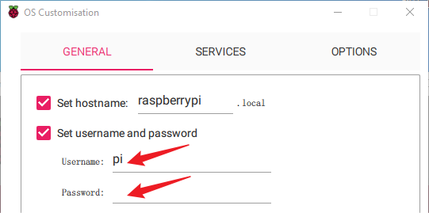
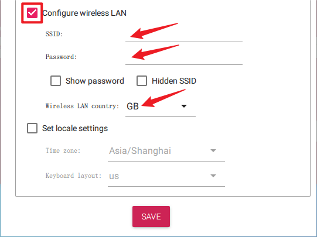
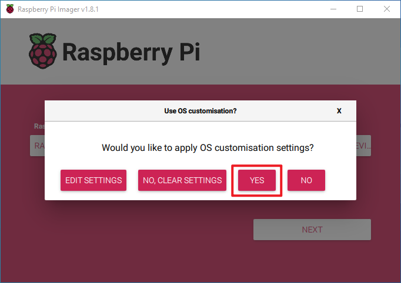

Nota
Ciao, benvenuto nella community di SunFounder Raspberry Pi & Arduino & ESP32 Enthusiasts su Facebook! Approfondisci Raspberry Pi, Arduino ed ESP32 insieme ad altri appassionati.
Perché unirsi?
Supporto esperto: Risolvi problemi post-vendita e sfide tecniche con l’aiuto della nostra community e del nostro team.
Impara e Condividi: Scambia consigli e tutorial per migliorare le tue competenze.
Anteprime esclusive: Accedi in anteprima a nuovi annunci di prodotti e anticipazioni.
Sconti speciali: Godi di sconti esclusivi sui nostri prodotti più recenti.
Promozioni festive e omaggi: Partecipa a omaggi e promozioni durante le festività.
üëâ Pronto a esplorare e creare con noi? Clicca su [Qui] e unisciti oggi stesso!
Installazione del sistema operativo
Componenti richiesti
Raspberry Pi 5
A Personal Computer
A Micro SD card
Passaggi di installazione
Visita la pagina di download del software Raspberry Pi a questo link: Raspberry Pi Imager. Scegli la versione dell’Imager compatibile con il tuo sistema operativo. Scarica e apri il file per avviare l’installazione.

Durante l’installazione, a seconda del sistema operativo, potrebbe apparire un prompt di sicurezza. Ad esempio, Windows potrebbe mostrare un messaggio di avviso. In tal caso, seleziona Maggiori informazioni e poi Esegui comunque. Segui le istruzioni sullo schermo per completare l’installazione di Raspberry Pi Imager.

Inserisci la scheda SD nello slot del tuo computer o laptop.
Avvia l’applicazione Raspberry Pi Imager cliccando sull’icona o digitando
rpi-imagernel terminale.
Clicca su CHOOSE DEVICE e seleziona il tuo modello specifico di Raspberry Pi dall’elenco.
Clicca su Choose OS e seleziona un sistema operativo da installare.

Clicca su Choose Storage e seleziona il dispositivo di archiviazione appropriato per l’installazione.
Nota
Assicurati di selezionare il dispositivo di archiviazione corretto. Per evitare confusione, scollega eventuali dispositivi di archiviazione aggiuntivi se ce ne sono più di uno collegato.

Clicca su NEXT e poi su EDIT SETTINGS per personalizzare le impostazioni del sistema operativo. Se hai un monitor per il tuo Raspberry Pi, puoi saltare i passaggi successivi e cliccare su “Sì” per avviare l’installazione. Puoi regolare altre impostazioni in seguito dal monitor.

Definisci un hostname per il tuo Raspberry Pi.
Nota
L’hostname è l’identificatore di rete del tuo Raspberry Pi. Puoi accedere al tuo Pi utilizzando
<hostname>.localo<hostname>.lan.
Crea un Nome utente e una Password per l’account amministratore del Raspberry Pi.
Nota
Stabilire un nome utente e una password unici è fondamentale per proteggere il tuo Raspberry Pi, che non ha una password predefinita.
Configura la LAN wireless fornendo SSID e Password della tua rete.
Nota
Imposta il
Paese della LAN wirelesscon il codice ISO/IEC alpha2 code corrispondente alla tua posizione.Clicca su SERVIZI e attiva SSH per consentire l’accesso remoto sicuro basato su password. Ricorda di salvare le impostazioni.
Conferma le impostazioni selezionate cliccando su Sì.
Se la scheda SD contiene dati esistenti, assicurati di fare un backup per evitare la perdita di dati. Procedi cliccando su Sì se non è necessario alcun backup.

Il processo di installazione del sistema operativo inizierà sulla scheda SD. Al termine apparirà una finestra di dialogo di conferma.